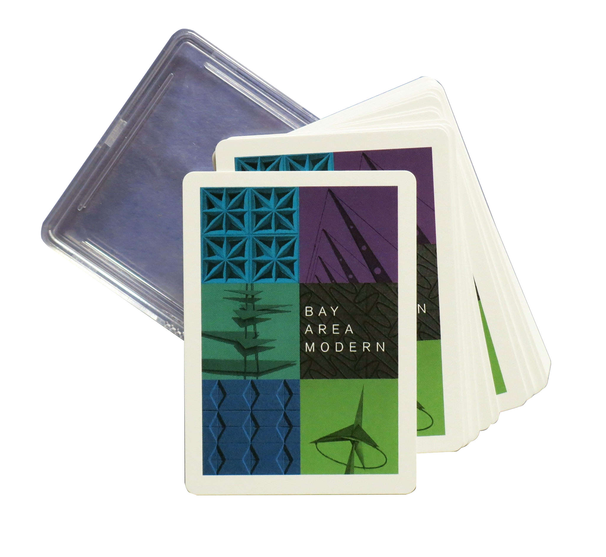

<!DOCTYPE html><html lang="en"></html><meta name="viewport" content="width=device-width, initial-scale=1.0"/><head><title>Bay Area Modern Cards</title><meta charset="UTF-8"/><meta name="viewport" content="width=device-width, initial-scale=1"/><link rel="shortcut icon" href="http://calmodbooks.github.io/bayAreaModernCards/assets/img/favicon.ico"/><link rel="stylesheet" href="assets/css/cards_main.css"/><script src="https://use.fontawesome.com/107afcc669.js"></script></head><body><div class="header"><p class="small photo-credit">Photo by Arnold Del Carlo. Courtesy of Sourisseau Academy for State and Local History</p><h1> 
Bay <br/>Area <br/>Modern</h1><div class="navbar"><ul class="nav"><li class="big"><a href="#buy">Buy</a></li><li class="big"><a href="#exploreDeck">Explore</a></li><li class="big"><a href="mailto:info@calmodbooks.com">Contact</a></li><li class="big"><a href="#stores">Stores</a></li><li class="big"><a href="/index.html">Motel California Book</a></li></ul></div></div><section class="buyNow"><a id="buy"></a><div class="col-1"><div class="credit small">Card design by Rob Keil</div></div><div class="col-2"><div class="description"><div id="text"><p>How well do you know Bay Area Modernism? </p><p>Test your knowledge, or play a game of Rummy, with this deck of 52 architecture cards, each featuring a modern building in the San Francisco Bay Area. </p><p>Each card suit showcases 13 buildings, which could be used as the foundation for a self-guided architecture tour. </p></div><form action="https://www.paypal.com/cgi-bin/webscr" method="post" target="_top"><input type="hidden" name="cmd" value="_s-xclick"/><input type="hidden" name="hosted_button_id" value="E5B753BS73CEL"/><input type="submit" value="Buy Now *" name="submit" alt="PayPal - The safer, easier way to pay online!" class="btn"/></form><p class="small">* Please <span><a href="mailto:info@calmodbooks.com">contact us</a></span> for bulk orders (4 or more decks) and international shipping.</p></div></div></section><section class="quote"><p class="small photo-credit">Photo by Heather David</p><div class="quote-bg"><div class="quote-box"><p>“From International to Organic, from Googie to Brutalism, explore some of the unique architecture of the San Francisco Bay Area.”</p></div></div></section><section class="exploreDeck"><a id="exploreDeck"></a><h2>Explore the Deck</h2><div class="cards-wrap"><div id="card1" class="card-hor"><div id="active" class="caption sample"><p>Distinctive in design, the <span>San Jose Center for the Performing Arts (1972)</span> represents an architectural “who’s who” of some of the brightest minds of Taliesin Associates, Frank Lloyd Wright’s atelier.  An excellent example of organic modernism, both exterior and interior spaces are characterized by spiral ramps, decorative arches and spheres.</p></div><p class="small photo-credit">Center for the Performing Arts, vintage postcard</p></div><div id="card2" class="card-vert"><div class="caption standard"><p>San Francisco’s iconic <span>Transamerica Pyramid </span>stands an impressive 853 feet.  Designed by architect William Pereira, the idea behind the building’s shape was to allow for natural light to hit the city streets below. The building, which is covered in white quartz, dates to 1972.</p></div><p class="small photo-credit">Transamerica Pyramid, photo by Heather David</p></div><div id="card3" class="card-vert"><div class="caption standard"><p><span>The Paul Masson Champagne Cellars</span> and visitor’s center opened in Saratoga in 1959. Designed by John Savage Bolles, the ultramodern winery inspired a traveling photographic exhibition, featuring the work of Ansel Adams.  A giant metal sculpture by Gurdon Woods called "Effervescence of Champagne" once stood at the entrance.</p></div><p class="small photo-credit">Paul Masson Champagne Cellars, vintage postcard</p></div><div id="card4" class="card-hor"><div class="caption standard"><p><span>The College of San Mateo</span>, designed by architect John Carl Warnecke, opened in 1963. Buildings were constructed using a combination of concrete, glass, and steel.  The campus’ visual centerpiece was, and continues to be, its library.</p></div><p class="small photo-credit">College of San Mateo – Heather David  </p></div><div id="card5" class="card-hor"><div class="caption standard"><p>Built on a sloping hill in Marin County, <span>Case Study #26 (1962 – 1963)</span> is Northern California’s only Case Study house.  To minimize excavation, architect Beverley David Thorne utilized an innovative design that offsets the main living area from the carport/entry way.  All the major rooms of the home, with the exception of the kitchen, breakfast room, and foyer, offer panoramic views.</p></div><p class="small photo-credit">Case Study House, photo by Matt McCourtney</p></div><div id="card6" class="card-vert"><div class="caption standard"><p>San Jose’s award-winning <span>IBM campus</span>, designed by architect John Savage Bolles, opened in 1958.  Buildings were accented with brick and multicolored tiles, the tile pattern said to mimic an IBM punch card.  The centerpiece in the IBM campus’ art collection was the Hydro Gyro, a giant kinetic metal sculpture designed by the artist Bob Howard.</p></div><p class="small photo-credit">IBM San Jose - Sourisseau Academy for State and Local History, photo by Arnold Del Carlo</p></div></div></section><section class="stores"><a id="stores"></a><div class="box"><div class="col-1"><h2>Retailers</h2><div class="store-list"><div class="left"><p class="store"><span>SFMOMA Gift Shop</span><br/>151 3rd St.<br/>San Francisco, CA 94103 </p><p class="store"><span>William Stout Architectural Books</span><br/>804 Montgomery St.<br/>San Francisco, CA 94133</p><p class="store"><span>Antiques Colony </span><br/>1881 W San Carlos St.<br/>San Jose, CA 95128</p></div><div class="right"><p class="store"><span>23 Skidoo</span><br/>427 S Bascom Ave.<br/>San Jose, CA 95128</p><p class="store"><span>MID CENTURY MØBLER</span><br/>1065 Ashby Ave.<br/>Berkeley, CA 94710</p><p class="store"><span>Amazon</span></p></div></div><p class="footnote">Want to become a retailer? Contact us at <span><a href="mailto:infocalmodbooks.com">info@calmodbooks.com</a></span></p></div><div class="col-2"><div class="thumbs-wrap"></div><p class="small photo-credit">Photo credits. Clockwise: Eichler Fairbrae Swim Center, Heather David - Nolan Round House, Liz Rusby - Marin Civic Center Post Office, Heather David - Sunset View Mortuary, Ken Duffy</p></div></div></section><footer><div class="small copyright"><p>Copyright Calmodbooks 2016 - Web site design by Laura Holm</p></div><div class="social"><ul class="social-list"><li><a href="mailto:info@calmodbooks.com"><i class="fa fa-envelope"></i><span class="hide">Email</span></a></li><li><a href="https://www.facebook.com/groups/115002571865695/"><i class="fa fa-facebook-square"></i><span class="hide">Facebook</span></a></li><li><a href="https://www.flickr.com/photos/14696209@N02/"><i class="fa fa-flickr"></i><span class="hide">Flickr</span></a></li></ul></div></footer><script src="https://code.jquery.com/jquery-2.2.3.min.js"></script><script src="assets/js/jquery.mobile-events.min.js"></script><script src="assets/js/functions.js"></script></body>